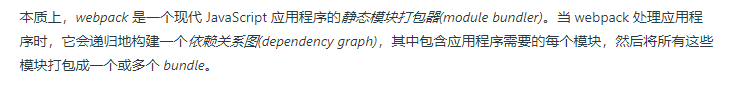
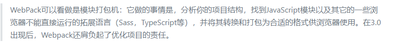
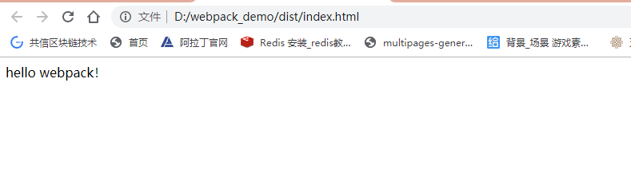

注：
** 先来说下前端为什么需要学习webpack吧！**
因为现在SPA流行，javascript的依赖包，less,scss.sass样式文件的编译。
更重要的是前端现在三大主流Vue.js 、React.js和AngluarJs都和webpack紧紧相连了。
说实话，现在不会一点webpack，那和三大框架还是有点距离了。
webopack 到底是什么？


简单来说，就是一个模块打包机。
安装webpackji
安装webpack 首先你先要安装nodejs,这里我就不多做解释了，直接去nodejs 官网下载安装包，傻瓜式安装就可以了。
nodejs自带包管理工具=》npm
现在Ctrl = R 打开cmd命令工具，
$ npm -v查看 npm 版本然后在输入下面指令，全局安装webpack
$ npm install -g webpack
npm下载国外的包会很慢很慢
解决办法： 使用淘宝镜像。
你可以使用我们定制的 cnpm (gzip 压缩支持) 命令行工具代替默认的 npm:
$ npm install -g cnpm --registry=https://registry.npm.taobao.org
速度就上去了，或者你也可以用yarn。
官网不推荐全局安装webpack。
直接上手一个DEMO，让你先爽一把。
创建文件夹： webpack_demo
$ cd webpack_demo
切换到路径到webpack_demo。
然后在文件夹下面创建两个子文件夹 src 和 dist，
src: 生产环境存放；
dist: 生产环境存放的（webpack打包后存放文件的）
然后再在dist文件夹下面创建index.html文件，里面追下面内容：
<!DOCTYPE html>
<html lang="en">
<head>
<meta charset="UTF-8">
<meta name="viewport" content="width=device-width, initial-scale=1.0">
<meta http-equiv="X-UA-Compatible" content="ie=edge">
<title>webpack</title>
</head>
<body>
<div id="title"></div>
<script src="./main.js"></script>
</body>
</html>
然后再在src文件夹下面创建entrance.js文件，入口文件。
在其追加：
document.querySelector('#title').innerHTML = 'hello webpack！'
需要编译的文件都弄好了。
在项目需要使用npm之前，先初始化项目，生成 package.json。
$ npm init
没有什么特别要求的就一直回车就可以了，
现在在webpack_demo项目内安装webpack。
$ npm install webpack --save
这样在项目内部就安装了webpack。
$ webpack -v
运行上面命令就可以查看安装的webpack版本了
运行下面命令进行打包
$ webpack src/entrance.js
运行完上面的命令，你会发现项目已经打包好了。你直接打开dist的html 就可以看到：

是不是觉得很爽，后面我会继续为大家更新完成的，关注我可以及时关注更新！